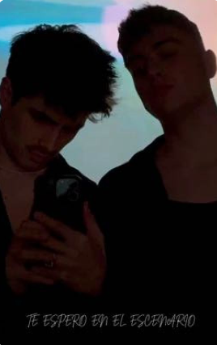
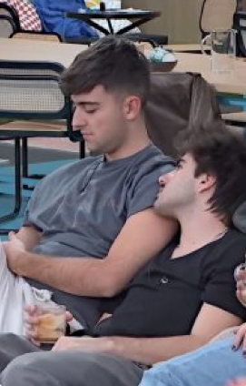
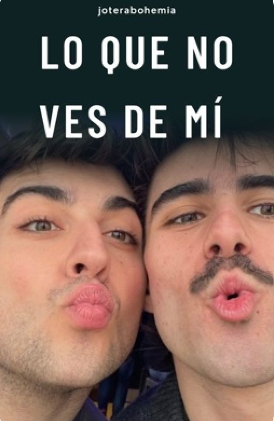
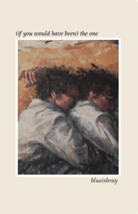
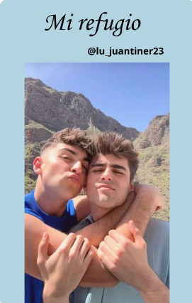
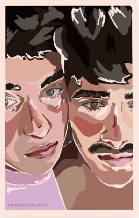
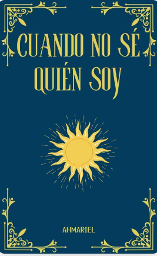
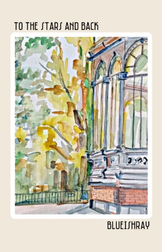

Te espero en el escenario
Juanjo llegó a Madrid en busca de cumplir un sueño, dedicarse al baile. Ahora, años después, y tras haber ganado el premio nacional a mejor bailarín de España, se ha visto en la obligación de retirarse después de sufrir un accidente que le impide bailar.
Martin llega a la capital con un objetivo claro, ganar el próximo concurso de baile nacional. Para ello intentará que el antiguo ganador del concurso le de clases de danza.
¿Será Martin capaz de conseguir que Juanjo deje sus miedos atrás y le ayude a ganar el concurso?
Fanfics de Wattpad COMPLETOS


Please don't go- Juantin-
Martin, después de la ruptura con su exnovio decide mudarse a Madrid. Esta decisión cambiara varios aspectos de su vida.

lo que no ves de mí - juantin
donde juanjo es un chico que se niega a enamorarse otra vez
o
donde martin se enamora de su nuevo amigo

the one
Martin y Juanjo son para siempre.
Hasta que dejan de serlo.

Mi refugio ~Juantin
Juanjo vive de fiesta en fiesta y está descuidando su tercer año de carrera. A ojos de la gente es brusco y borde. Pero solo los que le conocen saben que eso no es verdad.
Martin es todo lo contrario. Un chico calmado y tímido. Vive atado a su novio y le aterra hacerle frente a sus problemas.
¿Pueden dos almas totalmente distintas encontrarse en el camino y fusionarse en una misma?

Guilty as Sin?
Donde Martin, un chico distraído y callado, descubre algo que no debería de haber visto
o...
Donde Juanjo, el hermano mayor de su mejor amiga, no soporta a la gente entrometida

Cuando no sé quién soy - Juantin OT...
[...] Una historia sobre aprender a quererse y a querer, a aceptarnos con nuestras imperfecciones y a trabajar por aquello que nos mueve. Una historia sobre el amor, en todas sus formas y manifestaciones.

to the stars and back
"Supongo que puedo hacerte ese favor." Juanjo le mira por primera vez a los ojos, divertido. Hay un brillo en su mirada, una especie de reto. Martin no se atreve a acercarse, pero no le hace falta tener contacto físico para saber qué es lo que está pasando.
"¿Se te da bien hacer favores?"